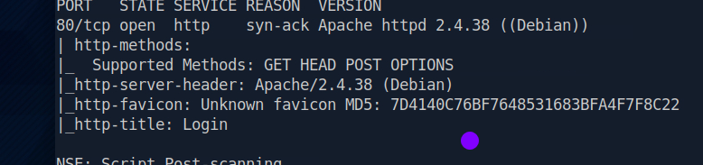
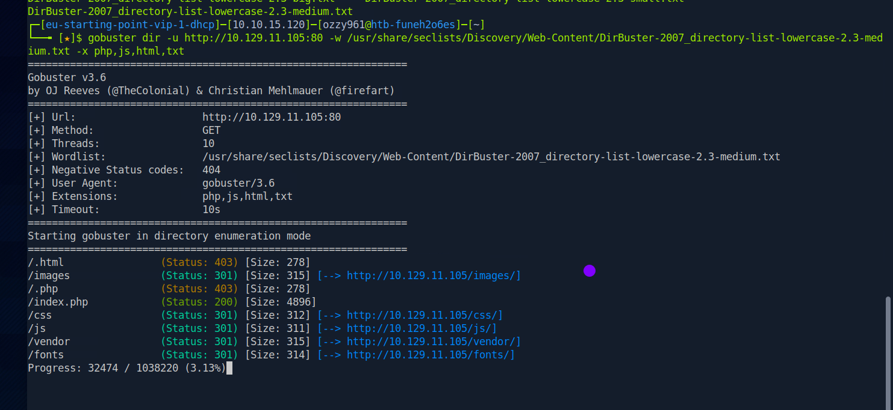
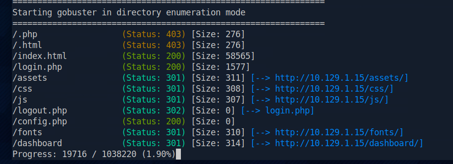

Initial Nmap scan
I began with an Nmap scan to identify the target's exposed services and establish its initial attack surface. The objective was to determine which ports were open, identify the services running on them, and decide where further enumeration would be most useful.
nmap -sC -sV <TARGET_IP>
Initial Nmap enumeration showing HTTP exposed on port 80.
Port 80 was open and running Apache HTTP Server 2.4.38. The HTTP service presented a login page, making the web application the primary area for further enumeration.
Discovering web content
With HTTP identified as the primary attack surface, I performed directory and file enumeration using Gobuster. The goal was to identify accessible resources and discover application files that were not immediately visible from the main page.
gobuster dir -u http://<TARGET_IP>:80 -w /usr/share/seclists/Discovery/Web-Content/DirBuster-2007_directory-list-lowercase-2.3-medium.txt -x php,js,html,txt
Gobuster enumerating directories and common web application files.
Identifying the login endpoint
The directory enumeration revealed several potentially interesting files. One result stood out: login.php.

Directory enumeration revealing the login.php endpoint.
The application exposed a dedicated login.php endpoint, providing an authentication interface that warranted further testing.
Testing the authentication mechanism
I visited the discovered login endpoint and tested the authentication functionality as a potential injection point. The login form was vulnerable to SQL injection, allowing the authentication logic to be manipulated.
Authentication bypass
I used the following payload as the username:
admin'#The single quote attempts to close the application's string value, while the # character acts as a comment marker in MySQL, causing the remainder of the SQL statement to be ignored. This can remove the password comparison from the effective query and allow authentication to succeed when the application is vulnerable to this form of SQL injection.
Successful authentication
The injected username successfully bypassed the application's authentication mechanism. The application accepted the request and provided access to the protected page.
Successful authentication and the resulting flag.
The SQL injection vulnerability provided unauthorized access to the application's protected functionality and exposed the flag.
Lessons from Appointment
Appointment reinforced the importance of treating web applications as an attack surface whenever HTTP is exposed. Initial service enumeration identified the web server, while directory enumeration helped uncover an application endpoint that was not obvious from the initial scan.
The machine also demonstrated how improper handling of user-supplied input can directly affect an application's authentication logic. A simple SQL injection payload was enough to alter the intended query behavior and bypass authentication.
Tools used
The main tools and techniques used during the exercise were:
- Nmap — service and version enumeration
- Gobuster — directory and file enumeration
- SQL Injection — authentication bypass
Related resources
The resources below cover the machine itself and the enumeration and SQL injection techniques used throughout the exercise.